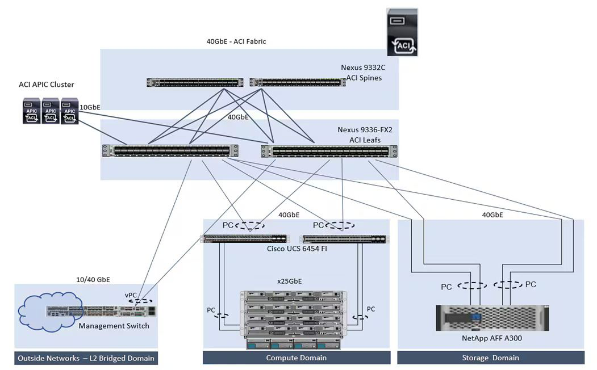
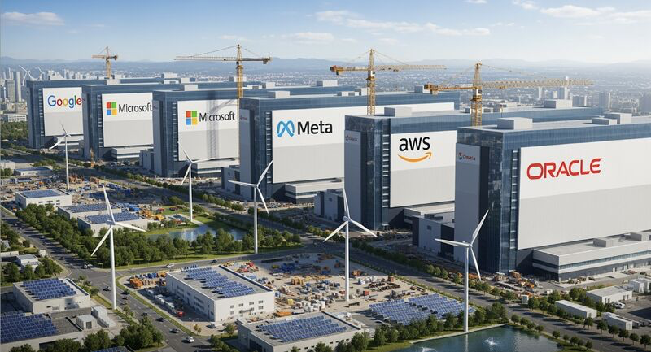

The Core – Cisco ACI Data Center Design

At the center of this topology lies the Cisco ACI fabric, formed by a spine-leaf architecture. Two Nexus 9332C switches serve as spine switches, and two Nexus 9336-FX2 switches act as leaf switches. These switches are interconnected using high-speed 40GbE links, forming a non-blocking, low-latency fabric. All the data center devices connect only to the leaf layer—never to the spine directly—ensuring a scalable, predictable, and programmable network.
Policy control is managed by the ACI APIC Cluster. This cluster of three controllers pushes policies, manages configurations, monitors performance, and enforces security across the infrastructure. Instead of configuring VLANs and routing manually, APIC delivers an application-centric model that dramatically simplifies operations.
External connectivity is provided by a Management Switch connected to ACI leaf switches using vPC links. This design ensures seamless Layer 2 bridging for legacy systems, enabling smooth migrations and secure north-south traffic flows.
The Compute Domain uses Cisco UCS Fabric Interconnects, connecting northbound to ACI leaves and southbound to compute nodes. This setup delivers end-to-end automation and policy enforcement, reducing complexity and improving agility. The Storage Domain connects directly to ACI leaves via high-speed port channels, ensuring consistent security and QoS policies for storage traffic, maintaining predictable application performance.
AI Is Now Growing Faster Than Data Centers Can Handle

Artificial Intelligence (AI) is transforming every aspect of our lives at an unprecedented pace. From healthcare to finance, entertainment to education, AI demand is exploding across every sector every day. But this rapid growth is creating a new challenge: data centers—the backbone of our digital world—are struggling to keep up.
- AI demand is exploding. Businesses and consumers alike are embracing AI-powered tools and services, driving a surge in compute needs.
- Cloud use is growing. Whether for work, play, or everything in between, cloud computing has become essential.
- Data centers are racing to keep up. But the clock is ticking, and capacity is not scaling fast enough.
According to McKinsey, we need to double data center capacity in a quarter of the time it took to build everything so far. This isn’t slow, steady growth—it’s a building boom at light speed. 🚀
Who’s Leading the Charge?
The biggest tech giants and infrastructure companies are investing billions to meet this demand:
- Microsoft, Google, Oracle, Meta, AWS, CyrusOne, Equinix, Digital Realty, IBM Cloud, EDGNEX, China Telecom and others are investing billions globally.
This Is No Longer About “Servers in Sheds”
The AI-driven data center race is about much more than just physical servers. It’s about:
- Data: How much can we store and process?
- Power: How much energy can we supply sustainably?
- Sustainability: How green can we go while scaling?
- Speed: How fast can we build and deploy?
McKinsey estimates that by 2030, the world will need to invest $6.7 trillion in data centers to keep pace with AI’s compute demands. About 70% of this new capacity will be AI-driven. This massive investment will fuel everything from chips and hardware development to energy infrastructure and site construction.
To Every Builder, Planner, Engineer, and Cloud Team: You are powering the future. You are the true heroes behind the AI revolution.